ภาพรวมบทนี้ ใน L1 เราเห็นว่าสาเหตุอันดับต้นของโครงการล้มเหลวคือ requirement ไม่ครบ ไม่ชัด และเปลี่ยนไปเรื่อย ๆ บทนี้จึงเรียนวิธี "จัดการ requirement อย่างเป็นวิศวกรรม" เรียกว่า Requirements Engineering (RE)
เนื้อหาเริ่มจากว่า requirement คืออะไร มีกี่ประเภท แล้วไล่ตาม 4 กระบวนการของ RE คือ elicitation (หา), specification (เขียน), validation (ตรวจ) และ change (จัดการการเปลี่ยนแปลง)
เนื้อหาดัดแปลงจากหนังสือ Sommerville, Software Engineering (2015) ต่อยอดไปบท L4 Use case modeling และ L6–L7 DFD โดยตรง
1. Software Requirements คืออะไร
- คำอธิบาย "บริการ" ที่ระบบควรให้ และ ข้อจำกัด ในการทำงานของระบบ
- สะท้อน ความต้องการของลูกค้า ต่อระบบที่มีจุดประสงค์บางอย่าง
- มักมี นิยามฟังก์ชันของระบบที่ละเอียดและเป็นทางการ
💡 พูดง่าย ๆ requirement ตอบ 2 คำถาม: ระบบต้องทำอะไร และ ต้องทำภายใต้เงื่อนไขอะไร
2. แหล่งที่มาของ Requirements (Sources)
ภาพในสไลด์มี Business Analyst (BA) อยู่ตรงกลาง และแลกเปลี่ยนข้อมูลกับทุกฝ่าย:
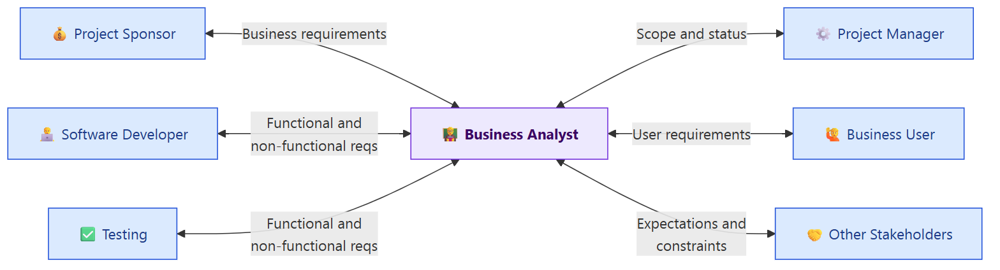
| ฝ่าย | ข้อมูลที่แลกเปลี่ยนกับ BA |
|---|---|
| Project Sponsor | Business requirements (ความต้องการทางธุรกิจ) |
| Project Manager | Scope and status (ขอบเขตและสถานะโครงการ) |
| Business User | User requirements (ความต้องการของผู้ใช้) |
| Other Stakeholders | Expectations and constraints (ความคาดหวังและข้อจำกัด) |
| Software Developer | Functional and non-functional requirements |
| Testing | Functional and non-functional requirements |
💡 ย้อนไป L1: BA คือ "สะพาน" ระหว่างลูกค้า/ผู้ใช้กับทีมพัฒนา ภาพนี้แสดงบทบาทนั้นชัดที่สุด
3. ประเภทของ Requirements
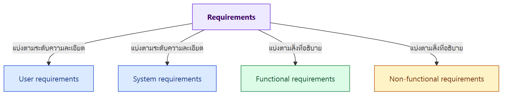
3.1 User requirements vs System requirements
| User requirements | System requirements | |
|---|---|---|
| บอกอะไร | บริการที่ระบบต้องให้ผู้ใช้ และข้อจำกัดในการทำงาน | คำอธิบาย ละเอียดกว่า ของฟังก์ชัน บริการ และข้อจำกัดของระบบ |
| ระดับ | มีได้ตั้งแต่ประโยคกว้าง ๆ ถึงคำอธิบายที่ละเอียด | กำหนดชัดเจนว่าต้อง implement อะไร |
| ภาษา | ภาษาที่ลูกค้าเข้าใจ | ละเอียด เป็นเทคนิคมากขึ้น |
ตัวอย่าง: Mentcare (Mental health care patient information system)
User requirement definition
- The Mentcare system shall generate monthly management reports showing the cost of drugs prescribed by each clinic during that month.
(ระบบต้องออกรายงานรายเดือน แสดงค่ายาที่แต่ละคลินิกสั่งในเดือนนั้น)
System requirements specification (แตกจากข้อ 1 ให้ละเอียด)
| ข้อ | ข้อความ | สรุปไทย |
|---|---|---|
| 1.1 | On the last working day of each month, a summary of the drugs prescribed, their cost and the prescribing clinics shall be generated. | วันทำการสุดท้ายของเดือน ต้องสร้างสรุปยาที่สั่ง ราคา และคลินิกที่สั่ง |
| 1.2 | The system shall generate the report for printing after 17.30 on the last working day of the month. | สร้างรายงานสำหรับพิมพ์ หลัง 17.30 น. ของวันทำการสุดท้าย |
| 1.3 | A report shall be created for each clinic and shall list the individual drug names, the total number of prescriptions, the number of doses prescribed and the total cost of the prescribed drugs. | รายงานแยกต่อคลินิก มีชื่อยา จำนวนใบสั่ง จำนวน dose และราคารวม |
| 1.4 | If drugs are available in different dose units (e.g. 10mg, 20mg, etc.) separate reports shall be created for each dose unit. | ยาที่มีหลายขนาด (10mg, 20mg) ต้องแยกรายงานตามขนาด |
| 1.5 | Access to drug cost reports shall be restricted to authorized users as listed on a management access control list. | เฉพาะผู้มีสิทธิ์ใน access control list เท่านั้นที่ดูรายงานค่ายาได้ |
💡 สังเกต: user requirement ประโยคเดียว แตกเป็น system requirements 5 ข้อ ที่ programmer เอาไปเขียนโค้ดได้เลย
ใครอ่าน requirement แต่ละระดับ (Readers / Stakeholders)
| User requirements | System requirements |
|---|---|
| Client managers | System end-users |
| System end-users | Client engineers |
| Client engineers | System architects |
| Contractor managers | Software developers |
| System architects |
⚠️ Managers (client managers, contractor managers) อ่านแค่ user requirements ส่วน software developers อ่าน system requirements เพราะต้องรู้รายละเอียดเพื่อ implement
Stakeholders ของ Mentcare
Patients, Doctors, Nurses, Medical receptionists, IT staff, Medical ethics manager, Health care managers, Medical records staff
💡 ระบบเดียวมี stakeholder ถึง 8 กลุ่ม และแต่ละกลุ่มต้องการต่างกัน จึงเก็บ requirement ยาก (ดูหัวข้อ 5)
3.2 Functional vs Non-functional requirements
| Functional requirements | Non-functional requirements | |
|---|---|---|
| บอกอะไร | บริการ ที่ระบบต้องให้ | ข้อจำกัด ของบริการหรือฟังก์ชัน เช่น response time, compatibility, memory use |
| รายละเอียด | ระบบต้อง ทำอะไร, ตอบสนอง input แต่ละแบบอย่างไร, ทำงานอย่างไรในสถานการณ์เฉพาะ | มักใช้กับ ระบบทั้งระบบ ไม่ใช่ฟีเจอร์เดียว |
| คำถาม | "ทำอะไร" | "ทำได้ดีแค่ไหน ภายใต้เงื่อนไขอะไร" |
ตัวอย่าง functional requirements (Mentcare)
- A user shall be able to search the appointments lists for all clinics.
- The system shall generate each day, for each clinic, a list of patients who are expected to attend appointments that day.
- Each staff member using the system shall be uniquely identified by his or her eight-digit employee number.
Types of Non-functional Requirements (Sommerville)
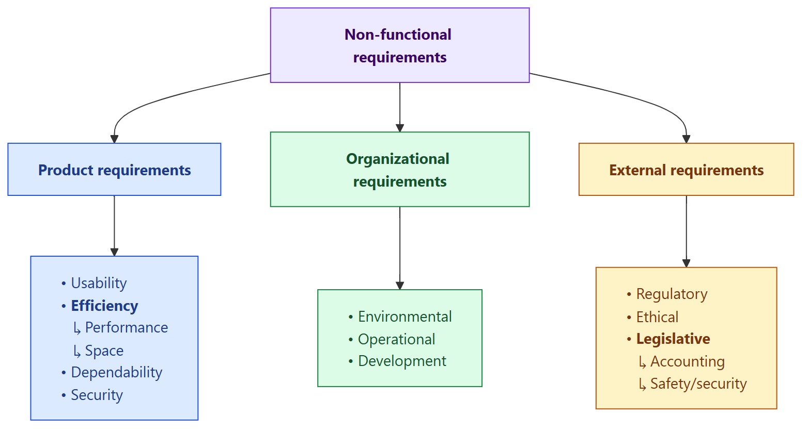
| กลุ่มใหญ่ | ความหมาย | ประเภทย่อย |
|---|---|---|
| Product requirements | ข้อกำหนดเรื่องพฤติกรรมของ ตัวผลิตภัณฑ์ | Usability, Efficiency (Performance, Space), Dependability, Security |
| Organizational requirements | มาจาก นโยบายและขั้นตอนขององค์กร | Environmental, Operational, Development |
| External requirements | มาจาก ปัจจัยภายนอก ระบบและองค์กร | Regulatory, Ethical, Legislative (Accounting, Safety/security) |
(คำอธิบายคอลัมน์ "ความหมาย" เสริมจากหนังสือ Sommerville สไลด์มีแค่แผนภาพ)
Example: Metrics สำหรับ Non-functional requirements
⚠️ Non-functional requirements ต้องวัดผลได้และทดสอบได้ (Must be measurable and testable!!!)
| Property | Measure (วัดด้วย) |
|---|---|
| Speed | Processed transactions/second, User/event response time, Screen refresh time |
| Size | Megabytes / Number of ROM chips |
| Ease of use | Training time, Number of help frames |
| Reliability | Mean time to failure, Probability of unavailability, Rate of failure occurrence, Availability |
| Robustness | Time to restart after failure, Percentage of events causing failure, Probability of data corruption on failure |
| Portability | Percentage of target dependent statements, Number of target systems |
แบบฝึก: Functional หรือ Non-functional? (สไลด์ 16)
(สไลด์มีแค่คำถาม เฉลยด้านล่างผมใส่เอง)
| ประโยค | ประเภท | เหตุผล |
|---|---|---|
| The application should be easy-to-use. | Non-functional | เป็นคุณภาพ (usability) ⚠️ แต่ เขียนไม่ดี เพราะวัดไม่ได้ ควรเขียนเป็น เช่น "ผู้ใช้ใหม่สั่งซื้อสำเร็จภายใน 3 นาทีโดยไม่ต้องอบรม" |
| The system shall allow users to create accounts. | Functional | บริการที่ระบบต้องทำ |
| The system shall allow users to add products to a shopping cart. | Functional | บริการที่ระบบต้องทำ |
| The system should be able to handle up to 10,000 concurrent users without significant performance degradation. | Non-functional | performance / scalability (คำว่า "significant" ยังกำกวมอยู่) |
| Users shall be able to search for products by keywords. | Functional | บริการค้นหา |
| The website should load within 2 seconds for 95% of user requests. | Non-functional | performance ที่ วัดได้ชัดเจน |
4. Requirements Engineering (RE)
นิยาม
กระบวนการ ค้นหา (finding out), วิเคราะห์ (analysing), จัดทำเอกสาร (documenting) และตรวจสอบ (checking) software requirements เรียกว่า Requirements Engineering (RE)
และก่อนเริ่ม RE มักมี Feasibility study
Feasibility Study (การศึกษาความเป็นไปได้)
- เป็นการศึกษา สั้น ๆ และเจาะจง ทำ ตั้งแต่ช่วงต้น ของ RE
- ตอบ 3 คำถาม:
- ระบบนี้ ช่วยให้องค์กรบรรลุเป้าหมายโดยรวม ไหม
- สร้างได้ภายในเวลาและงบ ด้วยเทคโนโลยีปัจจุบันไหม
- รวมเข้ากับระบบอื่นที่ใช้อยู่ ได้ไหม
⚠️ ถ้าคำตอบข้อใดข้อหนึ่งเป็น "ไม่" ก็ไม่ควรเดินหน้าโครงการ
RE Processes
- RE เป็นกระบวนการแบบวนซ้ำ (iterative)
- Output: System requirements document
- ประกอบด้วย 4 กระบวนการ
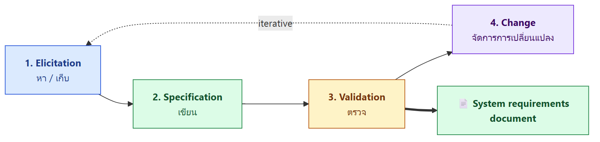
5. Requirements Elicitation (การเก็บ requirement)
เป้าหมายและสิ่งที่ต้องทำ
- Aim: เข้าใจงานที่ stakeholder ทำ และเข้าใจว่าระบบใหม่จะช่วยงานนั้นได้อย่างไร
- What needs to be done: วิศวกรซอฟต์แวร์ทำงานร่วมกับ stakeholder เพื่อหาข้อมูลเรื่อง
- application domain (ขอบเขตธุรกิจของงาน)
- กิจกรรมการทำงาน (work activities)
- บริการและฟีเจอร์ที่ stakeholder ต้องการ
- performance ที่ระบบต้องได้
- ข้อจำกัดด้าน hardware
- และอื่น ๆ
Challenges – ทำไมเก็บ requirement ยาก
- Stakeholder มักไม่รู้ว่าตัวเองต้องการอะไร
- Stakeholder อธิบายสิ่งที่อยากให้ระบบทำได้ยาก
- Stakeholder อาจ ขอสิ่งที่เป็นไปไม่ได้ เพราะไม่รู้ว่าอะไรทำได้หรือไม่ได้
- Stakeholder ต่างกลุ่ม มี requirement ต่างกัน และ พูดคนละแบบ
Who should be the key man? (สไลด์ 24)
ใช้การ์ตูน tree swing (แบบเดียวกับ L1) แล้วถามว่า ใครควรเป็นคนหลักในการเก็บ requirement ➜ ตามบทบาทใน L1 และภาพหัวข้อ 2 คำตอบคือ Business Analyst (BA) ที่เป็นสะพานระหว่างทุกฝ่าย (สไลด์ไม่ได้เฉลย)
Requirements Elicitation and Analysis Process (วนเป็นวงกลม)
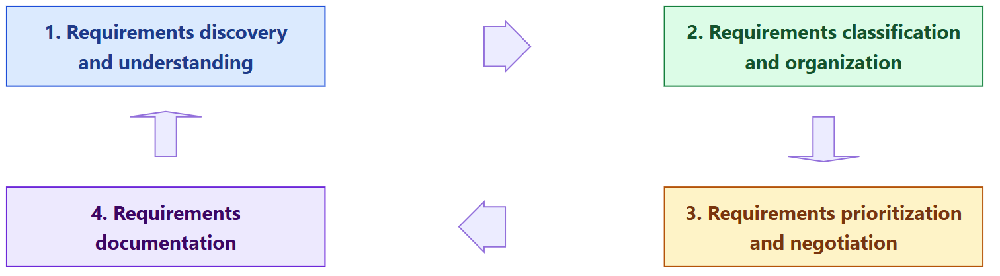
| ขั้น | ทำอะไร |
|---|---|
| 1. Discovery and understanding | คุยกับ stakeholder เพื่อค้นหาและทำความเข้าใจ requirement |
| 2. Classification and organization | จัดกลุ่ม requirement ที่เกี่ยวข้องกัน |
| 3. Prioritization and negotiation | จัดลำดับความสำคัญ และเจรจาเมื่อ requirement ขัดกัน |
| 4. Documentation | บันทึก requirement แล้ววนกลับไปข้อ 1 |
(คำอธิบายแต่ละขั้นเสริมจาก Sommerville สไลด์มีแค่ชื่อขั้น และมีภาพเกลียวเล็ก ๆ มุมขวาแสดงว่า RE เป็นกระบวนการที่วนซ้ำ)
6 Dimensions of Detailed Requirements Elicitation
เวลาเก็บ requirement ให้ครบ ต้องถามให้ครอบคลุม 6 มิติ:
| # | มิติ | คำถามตัวอย่าง (เสริม) |
|---|---|---|
| 1 | Individual Functionality | แต่ละฟังก์ชันต้องทำอะไร |
| 2 | Business Workflow | ขั้นตอนงานทางธุรกิจไหลอย่างไร |
| 3 | Data and Data formats | มีข้อมูลอะไร รูปแบบไหน |
| 4 | User Interfaces | หน้าจอหน้าตาอย่างไร |
| 5 | Existing Systems & Interfaces | ต้องเชื่อมกับระบบเดิมอะไรบ้าง |
| 6 | Other Constraints | Performance, Reliability ฯลฯ |
Elicitation Techniques
- เป็นกระบวนการ พบ stakeholder หลายกลุ่ม เพื่อค้นหาข้อมูลของระบบที่จะทำ
- เพื่อเข้าใจว่า คนทำงานอย่างไร ผลิตอะไร ใช้ระบบอื่นอย่างไร และ ต้องเปลี่ยนวิธีทำงานอย่างไร เมื่อมีระบบใหม่
- 2 แนวทางพื้นฐาน
- Interviewing – คุยกับคนเรื่องงานที่เขาทำ
- Observation / Ethnography – ดูคนทำงานจริง ว่าใช้ artifact อะไรและใช้อย่างไร
Interviewing (การสัมภาษณ์)
- การสัมภาษณ์ stakeholder ทั้งแบบ formal และ informal เป็นส่วนหนึ่งของ RE เกือบทุกโครงการ
- ทีม RE ถามเรื่อง ระบบที่ใช้อยู่ปัจจุบัน และ ระบบที่จะพัฒนา
- 2 แบบ
| Closed interview | Open interview |
|---|---|
| ถามตาม ชุดคำถามที่เตรียมไว้ | ไม่มีสคริปต์ตายตัว คุยเปิดกว้างเพื่อสำรวจประเด็น |
(คำอธิบาย closed/open เสริมจาก Sommerville สไลด์มีแค่ชื่อ)
Challenges / Limitations ของการสัมภาษณ์
- Stakeholder อาจใช้ ศัพท์เฉพาะ (jargon) ของสายงานตัวเอง
- Stakeholder คุ้นเคยกับงานมากจน อธิบายยาก หรือ คิดว่าเรื่องพื้นฐานไม่ต้องพูดถึง
- ไม่ค่อยได้ผลกับ requirement และข้อจำกัดระดับองค์กร เพราะมี ความสัมพันธ์เชิงอำนาจ ที่ละเอียดอ่อนระหว่างคนในองค์กร (เช่น พนักงานไม่กล้าพูดต่อหน้าหัวหน้า)
Tips for being an effective interviewer
- Be open-minded – เปิดใจ
- Avoid preconceived ideas – อย่าคิดคำตอบไว้ก่อน
- Willing to listen – ตั้งใจฟัง
- Prompt the interviewee to get discussion going – ชวนคุยให้บทสนทนาเดินต่อ
- Do not say "tell me what you want" – อย่าถามว่า "บอกมาเลยว่าต้องการอะไร" (เพราะ stakeholder มักไม่รู้ว่าตัวเองต้องการอะไร)
Ethnography (การสังเกตการณ์)
- เทคนิค การสังเกต เพื่อเข้าใจกระบวนการทำงานจริง แล้วหา requirement ของซอฟต์แวร์ที่จะมาช่วย
- นักวิเคราะห์ เข้าไปอยู่ในสภาพแวดล้อมการทำงานจริง ดูงานประจำวัน แล้วจดงานที่ผู้ใช้ทำจริง
- ช่วยค้นพบ implicit requirements (requirement แฝง) ที่สะท้อน วิธีทำงานจริง ไม่ใช่กระบวนการทางการที่องค์กรเขียนไว้
💡 ตัวอย่าง: คู่มือร้านกาแฟบอกให้พนักงานจดออเดอร์ลงระบบก่อนชง แต่พอไปดูจริง พนักงานเขียนชื่อลงแก้วแล้วชงเลยเพราะคนเยอะ ถ้าแค่สัมภาษณ์จะไม่มีทางรู้เรื่องนี้ (ตัวอย่างเสริม)
Other Elicitation Techniques
- Sampling of existing documentation, forms, and databases – สุ่มดูเอกสาร แบบฟอร์ม ฐานข้อมูลเดิม
- Research and site visits – ค้นคว้าและไปดูสถานที่จริง
- Questionnaires – แบบสอบถาม
- Joint Requirements Planning (JRP) – ประชุมร่วมกันระหว่าง stakeholder สำคัญ เพื่อกำหนด requirement
⚠️ แต่ละเทคนิคมีจุดแข็งและเหมาะกับสถานการณ์ต่างกัน ไม่มีเทคนิคเดียวที่ดีที่สุด
6. Requirements Specification (การเขียน requirement)
ภาพรวม
- กระบวนการ เขียน user และ system requirements ลงในเอกสาร requirement
- Requirement ที่ดีต้อง clear, unambiguous, easy to understand, complete, consistent
- ควรเขียนเป็น ประโยคภาษาธรรมชาติที่มีหมายเลข อาจมีตารางง่าย ๆ และแผนภาพที่เข้าใจง่ายประกอบ
ประเภทของ requirements specification
- Natural language specification
- Structured specifications (รวม user story)
- Use case specification
- Prototyping
- แบบอื่น: DFD, ERD
6.1 Natural Language Specification
Guidelines 5 ข้อ
- คิดรูปแบบมาตรฐาน และเขียนทุก requirement ตามรูปแบบนั้น
- ใช้ภาษาให้สม่ำเสมอ เพื่อแยก requirement ที่จำเป็นกับที่ควรมี
- "Shall" = mandatory (must have, ต้องมี)
- "Should" = desirable (nice to have, ควรมี)
- ใช้การเน้นข้อความ (ตัวหนา ตัวเอียง สี) กับส่วนสำคัญของ requirement
- หลีกเลี่ยง jargon, คำย่อ และอักษรย่อ
- ถ้าเป็นไปได้ ให้ใส่ rationale (เหตุผล) กับทุก requirement ว่า ทำไมต้องมี และ ใครเสนอ
⚠️ มักออกสอบ: Shall = ต้องมี / Should = ควรมี
ตัวอย่าง (แอปธนาคาร)
- The application shall allow users to view their account balance.
- The application shall send a real-time notification to users via emails.
- The application shall require users to securely log in using multi-factor authentication (MFA).
6.2 Structured Specifications
เขียน requirement ในรูปแบบ ฟอร์มที่มีช่องกำหนดไว้ มี 10 fields:
| No. | Field | Description |
|---|---|---|
| 1 | Requirement ID | รหัสไม่ซ้ำของแต่ละ requirement ไว้อ้างอิงและติดตาม |
| 2 | Requirement type | ประเภท เช่น functional, non-functional |
| 3 | Description | คำอธิบายละเอียดว่า requirement คืออะไร |
| 4 | Rationale | เหตุผลว่าทำไมจำเป็น และช่วยเป้าหมายโดยรวมอย่างไร |
| 5 | Source | ที่มา คือ ใครให้ requirement นี้ |
| 6 | Input(s) | ข้อมูลหรือเงื่อนไขที่ต้องใช้ในการทำงาน |
| 7 | Output(s) | ผลลัพธ์ที่คาดว่าจะได้ |
| 8 | Action | ขั้นตอนการทำงานของ requirement นี้ |
| 9 | Precondition | สภาพที่ต้องเป็นจริง ก่อน ทำงาน |
| 10 | Postcondition | สภาพของระบบ หลัง ทำงาน สะท้อนการเปลี่ยนแปลงที่คาดไว้ |
ตัวอย่างการกรอก (สไลด์ 39 เป็นฟอร์มว่าง ตัวอย่างนี้ผมเติมเอง)
Requirement ID: FR-03
Requirement Type: Functional
Description: ผู้ใช้เพิ่มสินค้าลงตะกร้าได้
Rationale: ให้ผู้ใช้เลือกสินค้าหลายชิ้นก่อนชำระเงินครั้งเดียว
Source: ผู้จัดการฝ่ายขายออนไลน์
Input(s): รหัสสินค้า, จำนวน
Output(s): ตะกร้าที่อัปเดตแล้ว และยอดรวม
Action: 1) ผู้ใช้กด "เพิ่มลงตะกร้า" 2) ระบบตรวจสต็อก 3) ระบบเพิ่มสินค้าและคำนวณยอดใหม่
Precondition: ผู้ใช้ login แล้ว และสินค้ามีในสต็อก
Postcondition: สินค้าอยู่ในตะกร้า และยอดรวมถูกต้อง
6.3 User Story
- ใช้ บันทึก requirement และ กำหนดขอบเขตของฟังก์ชัน (นิยมใน Agile)
- Template
ในฐานะ (As a) … บุคคล ตำแหน่ง หรือบทบาทในระบบ
ฉันต้องการ (I want) … พฤติกรรมหรือความสามารถในระบบ
เพื่อที่ (So that) … สร้างแล้วได้ประโยชน์อะไร มีคุณค่าอะไรกับธุรกิจ
- User story วัดผลด้วย "เงื่อนไขการยอมรับ" (Acceptance Criteria) หรือ Definition of Done (DoD)
ลำดับชั้น: User Need → Epic → User Story → Tasks / Acceptance Criteria (สไลด์ 41)
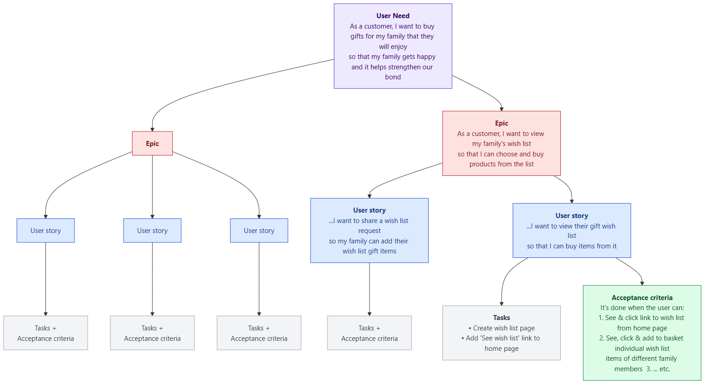
| ระดับ | ความหมาย |
|---|---|
| User Need | ความต้องการใหญ่สุดของผู้ใช้ |
| Epic | user story ขนาดใหญ่ที่ต้องแตกย่อยอีก |
| User Story | ชิ้นความต้องการที่ทำเสร็จได้ในรอบเดียว |
| Tasks | งานเทคนิคที่ทีมต้องทำ |
| Acceptance criteria | เกณฑ์ว่าเมื่อไรถือว่าเสร็จ |
(อ้างอิงภาพ: salmapatel.co.uk)
Acceptance Criteria (เงื่อนไขการยอมรับ)
- เงื่อนไขหรือเกณฑ์ที่ต้องทำให้สำเร็จ เพื่อให้ user story เสร็จสมบูรณ์และ stakeholder ยอมรับ
- คุณลักษณะ
- เขียนเป็นข้อ ๆ ชัดเจน ไม่กำกวม
- ต้องวัดผลได้ (measurable)
- มักเขียนในรูป Given – When – Then (Gherkin syntax) หรือเป็น bullet point
กำหนดให้ (Given) … ผู้ใช้อยู่ในสถานการณ์อะไร
เมื่อ (When) … ผู้ใช้ทำอะไร
จึง (Then) … ผลลัพธ์ของระบบ
ตัวอย่าง: ระบบขายตั๋วสวนสัตว์
User story
ในฐานะ ผู้เข้าชมสวนสัตว์ ฉันต้องการ ซื้อตั๋วออนไลน์ผ่านเว็บไซต์ เพื่อที่ ฉันจะได้ไม่ต้องต่อคิวยาวที่หน้าทางเข้า
Acceptance criteria
| # | Given | When | Then |
|---|---|---|---|
| 1 | ผู้เข้าชมเข้าสู่หน้าเว็บขายตั๋ว | ผู้เข้าชมเลือกจำนวนตั๋ว (ผู้ใหญ่/เด็ก) | ระบบแสดงราคารวมทั้งหมดให้เห็นทันที |
| 2 | ผู้เข้าชมเลือกจำนวนตั๋วเรียบร้อยแล้ว | ผู้เข้าชมชำระเงินผ่านช่องทางที่รองรับ (บัตรเครดิต หรือ QR Payment) | ระบบยืนยันการชำระเงินสำเร็จ |
| 3 | การชำระเงินสำเร็จ | ระบบออกตั๋ว | ผู้เข้าชมได้รับอีเมลยืนยันการซื้อตั๋ว พร้อม QR Code |
| 4 | ผู้เข้าชมมี QR Code ตั๋วจากอีเมล | ผู้เข้าชมไปที่ทางเข้าสวนสัตว์และสแกน QR Code | ระบบตรวจสอบและอนุญาตให้เข้าสวนสัตว์ได้ |
💡 สังเกตว่า Then ของข้อก่อน กลายเป็น Given ของข้อถัดไป criteria จึงร้อยต่อกันเป็นเส้นทางการใช้งานตั้งแต่ต้นจนจบ
6.4 Use Case Specification
(เรียนละเอียดใน L4)
- Use case คือการอธิบาย ปฏิสัมพันธ์ระหว่างผู้ใช้กับระบบ ด้วย โมเดลกราฟิก + ข้อความที่มีโครงสร้าง
- ชุดของ use case แทน ปฏิสัมพันธ์ที่เป็นไปได้ทั้งหมด ใน system requirements
- ระบุ ปฏิสัมพันธ์แต่ละอัน ระหว่างระบบกับผู้ใช้ หรือกับระบบอื่น
- บันทึกด้วย high-level use case diagram
- แต่ละ use case ควรมีคำอธิบายเป็นข้อความ (textual description)
ส่วนประกอบของ use case diagram
| สัญลักษณ์ | แทน |
|---|---|
| 🧍 Stick figure | Actor ซึ่งเป็นคนหรือระบบอื่นก็ได้ |
| ⬭ Named ellipse | Use case (ปฏิสัมพันธ์แต่ละประเภท) |
| ── Line | เชื่อม actor กับ use case |
ตัวอย่าง: Mentcare use case diagram
| Actor | Use cases |
|---|---|
| Medical receptionist | Register patient, View personal info. |
| Manager | View personal info., Export statistics, Generate report |
| Nurse | View record, Edit record |
| Doctor | View record, Edit record, Setup consultation, Generate report |
💡 use case เดียวใช้ร่วมกันหลาย actor ได้ เช่น "View record" ใช้ทั้ง Nurse และ Doctor
6.5 Prototyping
- Prototype ของ requirement ส่วนใหญ่เน้นส่วน User Interface (UI) ใน 2 ด้าน:
- Visual looks – ขนาด รูปทรง ตำแหน่ง สี
- Flow – control flow และ logical flow (กดแล้วไปหน้าไหน)
- ทำได้ 2 โหมด
| Low fidelity | High fidelity |
|---|---|
| ใช้ กระดาษหรือกระดาษแข็ง แทนหน้าจอ แล้วให้ คนเลื่อนแผ่น | ใช้ เครื่องมืออัตโนมัติ เช่น Visual Basic เขียนหน้าจอและกำหนด logical flow |
| ถูก เร็ว แก้ง่าย | สมจริง แต่ใช้เวลาและแรงมากกว่า |
(แถวล่างเสริมเอง ปัจจุบันเครื่องมือ high-fidelity ที่นิยมคือ Figma)
ตัวอย่างในสไลด์ 49: ภาพสเก็ตช์ด้วยมือของแอปมือถือ 8 หน้าจอ (หน้า home → sign in ด้วย Facebook/Twitter/LinkedIn → Balance → Search / Spend / Save / Find บนแผนที่) มี ลูกศรสีแดงแสดง flow ว่ากดปุ่มไหนแล้วไปหน้าไหน เป็นตัวอย่างของ low-fidelity prototype
6.6 Other Types of Specification
Data Flow Diagram (DFD) – แสดงการไหลของข้อมูล (เรียนละเอียดใน L6–L7)
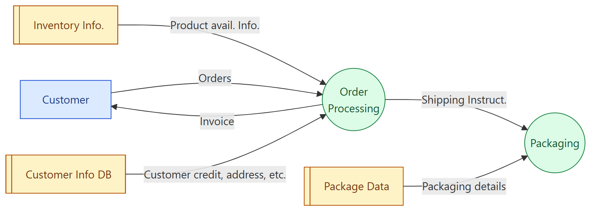
Entity Relationship Diagram (ERD) – แสดงความสัมพันธ์ของข้อมูล
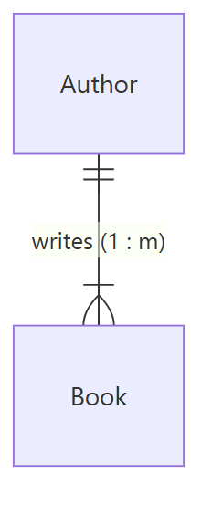
- Cardinality: ระบุ จำนวน ของ entity ที่สัมพันธ์กัน (ผู้แต่ง 1 คน เขียนหนังสือได้หลายเล่ม)
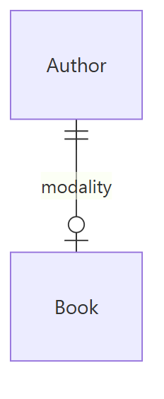
- Modality: ระบุว่า ความสัมพันธ์จำเป็นต้องมีหรือไม่
|= ต้องมี (mandatory)○= ไม่จำเป็นต้องมี (optional)- (ความหมายสัญลักษณ์เสริมเอง)
7. Software Requirements Document (SRS)
คืออะไร
- เรียกอีกชื่อว่า Software Requirements Specification (SRS)
- เป็น ข้อความทางการ ว่านักพัฒนาต้อง implement อะไร
- มีทั้ง user และ system requirements โดย user requirements อยู่ในบทนำ ของ SRS
- ผู้ใช้เอกสารหลากหลาย ตั้งแต่ผู้บริหารระดับสูงถึงวิศวกร ที่พัฒนาซอฟต์แวร์
ทำไมต้องทำเอกสาร requirement
- requirement ที่ชัดเจนจำเป็นต่อ design และ implementation
- ใช้ สร้าง test case และ test scenario โดยเฉพาะในระบบใหญ่ที่ทีม test แยกจากทีม dev
- ใช้ ควบคุม scope creep (scope บานปลาย)
- ใช้สร้าง เอกสารอบรมผู้ใช้, เอกสารการตลาด และเอกสารสำหรับ support และ maintenance
- ช่วย แบ่งโครงการใหญ่เป็นส่วน, จัดลำดับ release และทำให้บริหารโครงการง่ายขึ้น
Users of the SRS
| ผู้ใช้ | ใช้ SRS ทำอะไร |
|---|---|
| System customers | ระบุ requirement และอ่านเพื่อเช็กว่าตรงความต้องการไหม ลูกค้าเป็นคนระบุการเปลี่ยนแปลง requirement |
| Managers | ใช้ วางแผนเสนอราคา (bid) และวางแผนกระบวนการพัฒนา |
| System engineers | ใช้ทำความเข้าใจว่า ต้องพัฒนาระบบอะไร |
| System test engineers | ใช้ สร้าง validation tests |
| System maintenance engineers | ใช้ทำความเข้าใจระบบและ ความสัมพันธ์ระหว่างส่วนต่าง ๆ |
Structure of the SRS (10 บท)
| # | Chapter | เนื้อหา |
|---|---|---|
| 1 | Preface | กลุ่มผู้อ่านที่คาดไว้, ประวัติเวอร์ชัน พร้อมเหตุผลที่ออกเวอร์ชันใหม่และสรุปการเปลี่ยนแปลง |
| 2 | Introduction | ความจำเป็น ของระบบ, อธิบายฟังก์ชันสั้น ๆ, ทำงานร่วมกับระบบอื่นอย่างไร, สอดคล้องกับเป้าหมายธุรกิจหรือกลยุทธ์ขององค์กรอย่างไร |
| 3 | Glossary | นิยาม ศัพท์เทคนิค ในเอกสาร ไม่ควรสมมติว่าผู้อ่านมีความรู้ |
| 4 | User requirements definition | บริการที่ให้ผู้ใช้ รวม non-functional requirements ใช้ภาษาธรรมชาติ แผนภาพ หรือสัญลักษณ์ที่ลูกค้าเข้าใจ ระบุมาตรฐานผลิตภัณฑ์และกระบวนการที่ต้องทำตาม |
| 5 | System architecture | ภาพรวม สถาปัตยกรรม ระดับสูง แสดงการกระจายฟังก์ชันไปยัง module และเน้นส่วนที่ นำกลับมาใช้ซ้ำ |
| 6 | System requirements specification | functional และ non-functional requirements แบบละเอียด รวมถึง interface ไปยังระบบอื่น |
| 7 | System models | โมเดลกราฟิก แสดงความสัมพันธ์ระหว่างส่วนประกอบของระบบ และระหว่างระบบกับสภาพแวดล้อม เช่น object model, data-flow model, semantic data model |
| 8 | System evolution | สมมติฐานพื้นฐาน ของระบบ และ การเปลี่ยนแปลงที่คาดว่าจะเกิด (hardware เปลี่ยน, ความต้องการผู้ใช้เปลี่ยน) ช่วยให้นักออกแบบไม่ตัดสินใจอะไรที่ขวางการเปลี่ยนแปลงในอนาคต |
| 9 | Appendices | ข้อมูลเฉพาะ เช่น hardware requirements (config ขั้นต่ำและที่เหมาะสม) และ database requirements (โครงสร้างข้อมูลเชิงตรรกะและความสัมพันธ์) |
| 10 | Index | ดัชนีตัวอักษร ดัชนีแผนภาพ ดัชนีฟังก์ชัน ฯลฯ |
8. Requirements Validation (การตรวจ requirement)
คืออะไร และทำไมสำคัญ
- กระบวนการ ตรวจว่า requirement กำหนดระบบที่ลูกค้าต้องการจริง ๆ
- สำคัญมาก เพราะความผิดพลาดในเอกสาร requirement ทำให้ ต้นทุนแก้งานสูงมาก ถ้าเจอตอนพัฒนาหรือหลังใช้งานแล้ว
- เปลี่ยน requirement หนึ่งข้อ มักต้อง เปลี่ยน design และ implementation แล้ว ทดสอบใหม่ ด้วย
Validation Criteria (7 ข้อ)
| # | Check | ตรวจอะไร |
|---|---|---|
| 1 | Validity | requirement สะท้อน ความต้องการจริง ของผู้ใช้ |
| 2 | Consistency | ไม่ขัดแย้งกันเอง ไม่มีข้อจำกัดที่ขัดกัน หรือคำอธิบายฟังก์ชันเดียวกันที่ไม่ตรงกัน |
| 3 | Completeness | กำหนด ทุกฟังก์ชันและข้อจำกัด ครบ |
| 4 | Realism | ทำได้จริง และส่งมอบได้ |
| 5 | Clarity | ไม่กำกวม |
| 6 | Verifiability | เมื่อสร้างระบบเสร็จ ออกแบบ test ที่ทำซ้ำได้ เพื่อพิสูจน์ว่าระบบทำตาม requirement |
| 7 | Traceability | functional requirement สืบย้อนไปยังฟังก์ชันของระบบ ที่กำหนดไว้ได้ |
💡 จำ 7 ข้อ: V-C-C-R-C-V-T → "Very Clear Cats Run, Cats Visit Trees" (ประโยคช่วยจำ ไม่ได้อยู่ในสไลด์)
ตัวอย่างที่ไม่ผ่าน (เสริม)
- Consistency ไม่ผ่าน: ข้อ 3 บอก "รหัสผ่านอย่างน้อย 8 ตัว" แต่ข้อ 12 บอก "อย่างน้อย 6 ตัว"
- Verifiability ไม่ผ่าน: "ระบบต้องเร็ว" (เร็วแค่ไหน ทดสอบไม่ได้)
- Realism ไม่ผ่าน: "ระบบต้องไม่ล่มเลย 100% ตลอดไป"
9. Requirements Change และ Requirements Management
ทำไม requirement ถึงเปลี่ยน
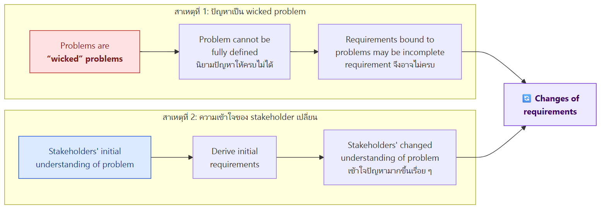
- Wicked problem คือปัญหาซับซ้อนที่ นิยามให้ครบตั้งแต่แรกไม่ได้ requirement ที่ผูกกับปัญหาแบบนี้จึงไม่ครบและต้องเปลี่ยน
- ความเข้าใจของ stakeholder เปลี่ยน เมื่อเห็นระบบหรือเข้าใจปัญหามากขึ้น requirement ก็เปลี่ยนตาม
Requirements Management
เมื่อ requirement เปลี่ยนตลอด ต้อง ติดตาม requirement แต่ละข้อ และ รักษาลิงก์ระหว่าง requirement ที่พึ่งพากัน เพื่อ ประเมินผลกระทบ ของการเปลี่ยนแปลงได้ กระบวนการนี้เรียกว่า Requirements Management
- เป็น กระบวนการทางการ สำหรับยื่นข้อเสนอการเปลี่ยนแปลง และเชื่อมการเปลี่ยนแปลงกับ system requirements
- ประกอบด้วย 2 กระบวนการ
| Requirements management planning | Requirements change management | |
|---|---|---|
| ทำเมื่อ | ช่วงวางแผน | หลังเอกสาร requirement ได้รับอนุมัติแล้ว |
| ทำอะไร | กำหนดว่าจะจัดการ requirement ที่เปลี่ยนตลอดอย่างไร | จัดการการเปลี่ยนแปลงทั้งหมดที่ถูกเสนอ |
Requirements Management Planning – ต้องพิจารณา 4 เรื่อง
- Requirements identification – ทุก requirement ต้องมี ID ไม่ซ้ำ เพื่ออ้างอิงข้ามกันและใช้ประเมิน traceability
- Change management process – ชุดกิจกรรมสำหรับ ประเมินผลกระทบและต้นทุน ของการเปลี่ยนแปลง
- Traceability policies – กำหนด ความสัมพันธ์ ระหว่าง requirement ด้วยกัน และระหว่าง requirement กับ design
- Tool support – เครื่องมืออัตโนมัติช่วยดูแล requirement
Requirements Change Management – 3 ขั้น
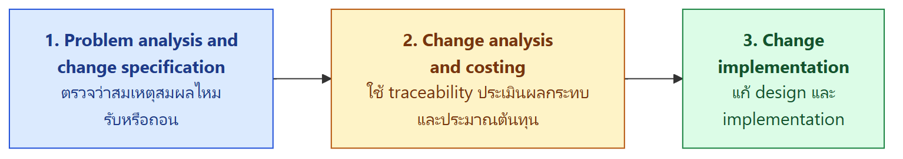
| ขั้น | ทำอะไร |
|---|---|
| 1. Problem analysis and change specification | ระบุปัญหาหรือข้อเสนอเปลี่ยนแปลง, ตรวจว่าสมเหตุสมผลไหม, ตัดสินว่า รับหรือถอน |
| 2. Change analysis and costing | ประเมินการเปลี่ยนแปลงโดยใช้ ข้อมูล traceability และความรู้เรื่อง requirement แล้ว ประมาณต้นทุน |
| 3. Change implementation | แก้ไข design และ implementation |
💡 เห็นความเชื่อมโยงไหม: Requirement ID (planning) → ทำให้ traceability ได้ → ทำให้ change analysis and costing ประเมินผลกระทบได้ ถ้าไม่มี ID ก็ไม่รู้ว่าแก้ข้อหนึ่งแล้วจะกระทบอะไรบ้าง
10. Exercise (สไลด์ 67)
โจทย์: เว็บไซต์ขายของออนไลน์
- เขียน functional requirements 5 ข้อ
- เขียน non-functional requirements 5 ข้อ
ตัวอย่างคำตอบ (ผมเขียนเอง ใช้ "shall" และวัดผลได้)
| # | Functional | Non-functional |
|---|---|---|
| 1 | The system shall allow users to register an account with email and password. | The website shall load each page within 2 seconds for 95% of requests. (performance) |
| 2 | Users shall be able to search products by keyword and category. | The system shall support 10,000 concurrent users. (scalability) |
| 3 | Users shall be able to add and remove products in a shopping cart. | The system shall be available 99.9% of the time per month. (reliability) |
| 4 | The system shall allow users to pay by credit card or QR payment. | Payment data shall be encrypted using TLS 1.2 or higher. (security) |
| 5 | The system shall send an order confirmation email after successful payment. | A new user shall complete a first purchase within 5 minutes without help. (usability) |
คำศัพท์สำคัญ
| คำศัพท์ | ความหมาย | จำง่าย ๆ ว่า |
|---|---|---|
| Software requirement | คำอธิบายบริการที่ระบบต้องให้ และข้อจำกัดของระบบ | ทำอะไร + เงื่อนไข |
| User requirement | ระดับกว้าง ภาษาที่ลูกค้าเข้าใจ | ฉบับลูกค้า |
| System requirement | ระดับละเอียด บอกชัดว่าต้อง implement อะไร | ฉบับ developer |
| Functional requirement | บริการ พฤติกรรม และการตอบสนองต่อ input | "ทำอะไร" |
| Non-functional requirement | ข้อจำกัดของบริการ ใช้กับทั้งระบบ ต้องวัดได้และทดสอบได้ | "ทำได้ดีแค่ไหน" |
| Product / Organizational / External requirements | 3 กลุ่มของ non-functional | ตัวผลิตภัณฑ์ / องค์กร / ภายนอก |
| Stakeholder | ผู้มีส่วนได้ส่วนเสียกับระบบ | ทุกคนที่เกี่ยวข้อง |
| Requirements Engineering (RE) | หา วิเคราะห์ เขียน และตรวจ requirement | วิศวกรรม requirement |
| Feasibility study | ศึกษาสั้น ๆ ช่วงต้นว่าควรทำโครงการไหม (3 คำถาม) | ทำได้/คุ้มไหม |
| Elicitation | การเก็บหรือค้นหา requirement จาก stakeholder | ขุดหา |
| Specification | การเขียน requirement ลงเอกสาร | จดให้ชัด |
| Validation | ตรวจว่า requirement ตรงกับที่ลูกค้าต้องการจริง | ตรวจทาน |
| Requirements management | ติดตามและจัดการการเปลี่ยนแปลงของ requirement | คุมการเปลี่ยน |
| Closed / Open interview | สัมภาษณ์ตามชุดคำถาม / คุยแบบเปิด | มีสคริปต์ / ไม่มี |
| Jargon | ศัพท์เฉพาะของสายงาน | ภาษาวงใน |
| Ethnography | สังเกตการทำงานจริงในสถานที่จริง | ไปนั่งดู |
| Implicit requirement | requirement แฝงที่ไม่มีใครพูด แต่มีจริงในการทำงาน | ของที่ไม่ได้บอก |
| JRP (Joint Requirements Planning) | ประชุมร่วมกันเพื่อกำหนด requirement | ประชุมรวม |
| Shall / Should | mandatory (ต้องมี) / desirable (ควรมี) | ต้อง / ควร |
| Rationale | เหตุผลว่าทำไมต้องมี requirement นี้ และใครเสนอ | ทำไม |
| Structured specification | ฟอร์ม 10 ช่อง (ID, type, description, rationale, source, input, output, action, pre, post) | ฟอร์มกรอก |
| Precondition / Postcondition | สภาพที่ต้องเป็นจริงก่อน / หลังทำงาน | ก่อน / หลัง |
| User story | As a … I want … So that … | ใคร-อยากได้อะไร-เพื่ออะไร |
| Epic | user story ขนาดใหญ่ที่ต้องแตกย่อย | story ก้อนใหญ่ |
| Acceptance criteria / DoD | เกณฑ์ที่ต้องผ่านจึงถือว่า story เสร็จ | เสร็จจริงเมื่อ… |
| Given–When–Then (Gherkin) | รูปแบบเขียน acceptance criteria | สถานการณ์–การกระทำ–ผลลัพธ์ |
| Use case | ปฏิสัมพันธ์ระหว่าง actor กับระบบ (กราฟิก + ข้อความ) | วงรี + คนก้าง |
| Actor | คนหรือระบบอื่นที่ใช้ระบบ | stick figure |
| Prototyping (low / high fidelity) | ต้นแบบ UI จากกระดาษ / จากเครื่องมืออัตโนมัติ | กระดาษ / โปรแกรม |
| DFD | Data Flow Diagram แผนภาพการไหลของข้อมูล | ข้อมูลไหลไปไหน |
| ERD | Entity Relationship Diagram | ข้อมูลสัมพันธ์กันอย่างไร |
| Cardinality / Modality | จำนวนที่สัมพันธ์ (1:m) / ความจำเป็นของความสัมพันธ์ | กี่อัน / ต้องมีไหม |
| SRS | Software Requirements Specification เอกสาร requirement ทางการ | คัมภีร์ requirement |
| Scope creep | ขอบเขตงานบานปลายเรื่อย ๆ | งานงอก |
| Traceability | สืบย้อนความสัมพันธ์ระหว่าง requirement กับ design ได้ | ตามรอยได้ |
| Verifiability | สร้าง test ที่ทำซ้ำได้เพื่อพิสูจน์ requirement | ทดสอบได้ |
| Wicked problem | ปัญหาที่นิยามให้ครบไม่ได้ตั้งแต่แรก | ปัญหาดื้อ |
สรุปท้ายบท / จุดที่มักออกสอบ
เรื่องที่ต้องจำ
- Requirement มี 2 มิติ: User vs System (ระดับความละเอียด) และ Functional vs Non-functional (สิ่งที่อธิบาย)
- Non-functional ต้อง measurable และ testable พร้อมตาราง metrics (speed, size, ease of use, reliability, robustness, portability)
- Non-functional แบ่ง 3 กลุ่ม: Product / Organizational / External
- Feasibility study 3 คำถาม: ตอบเป้าหมายองค์กรไหม, ทำได้ในเวลา งบ และเทคโนโลยีไหม, รวมกับระบบเดิมได้ไหม ถ้าตอบ "ไม่" ข้อใดข้อหนึ่ง ไม่ควรทำต่อ
- RE มี 4 กระบวนการ: elicitation → specification → validation → change (iterative) ผลลัพธ์คือ system requirements document
- Elicitation challenges 4 ข้อ
- Elicitation process 4 ขั้น: discovery → classification → prioritization & negotiation → documentation
- 6 dimensions: individual functionality, business workflow, data, UI, existing systems, other constraints
- 2 แนวทางหลัก: interviewing และ ethnography พร้อมเทคนิคอื่น (documents, site visits, questionnaires, JRP)
- Natural language guidelines 5 ข้อ โดยเฉพาะ shall = mandatory, should = desirable
- Structured specification 10 fields
- User story template + acceptance criteria (Given-When-Then)
- Use case diagram: stick figure = actor, ellipse = use case, line = การเชื่อม
- Prototyping: low fidelity (กระดาษ) vs high fidelity (เครื่องมือ)
- ทำไมต้องมีเอกสาร requirement 5 ข้อ และ ผู้ใช้ SRS 5 กลุ่ม
- โครงสร้าง SRS 10 บท
- Validation 7 criteria: validity, consistency, completeness, realism, clarity, verifiability, traceability
- Requirements management = planning (4 เรื่อง) + change management (3 ขั้น)
คู่ที่มักสับสน
| คู่ | ต่างกันที่ |
|---|---|
| User vs System requirements | กว้าง ลูกค้าอ่าน vs ละเอียด developer อ่าน |
| Functional vs Non-functional | ทำอะไร vs ข้อจำกัดหรือคุณภาพ ใช้กับทั้งระบบ |
| Shall vs Should | ต้องมี vs ควรมี |
| Interview vs Ethnography | ฟังจากที่เขาเล่า vs ดูจากที่เขาทำจริง (ได้ implicit requirement) |
| Closed vs Open interview | มีชุดคำถาม vs คุยเปิด |
| Low vs High fidelity prototype | กระดาษ คนเลื่อน vs เครื่องมือ ทำ flow อัตโนมัติ |
| Cardinality vs Modality | กี่อัน vs จำเป็นต้องมีไหม |
| Consistency vs Completeness | ไม่ขัดกันเอง vs ครบทุกฟังก์ชัน |
| Verifiability vs Traceability | ทดสอบพิสูจน์ได้ vs สืบย้อนไปยังฟังก์ชันหรือ design ได้ |
| Requirements management planning vs Change management | วางแผนก่อน vs จัดการการเปลี่ยนหลังเอกสารอนุมัติแล้ว |
แนวคิดที่ต้องอธิบายได้
- ทำไมห้ามถาม "tell me what you want" เพราะ stakeholder มักไม่รู้ว่าต้องการอะไร และอธิบายยาก ต้องชวนคุยจากงานที่เขาทำจริง
- ทำไม ethnography เจอสิ่งที่สัมภาษณ์ไม่เจอ เพราะคนทำงานจนคุ้นจนไม่คิดจะพูด และการทำงานจริงมักต่างจากกระบวนการทางการ
- ทำไม "easy-to-use" เป็น requirement ที่แย่ เพราะวัดไม่ได้และทดสอบไม่ได้ ไม่ผ่าน verifiability
- ทำไม validation สำคัญ เพราะแก้ requirement หลังพัฒนาแล้ว ต้องแก้ design และ implementation แล้ว retest ทำให้ต้นทุนสูงมาก
- ทำไม requirement ต้องมี ID ไม่ซ้ำ เพื่อทำ traceability และประเมินผลกระทบเมื่อมีการเปลี่ยนแปลง
- ทำไม requirement เปลี่ยนแน่นอน เพราะเป็น wicked problem และความเข้าใจของ stakeholder เปลี่ยนไปตามเวลา